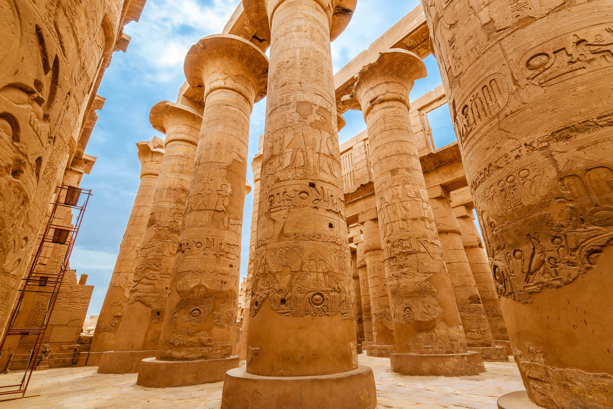
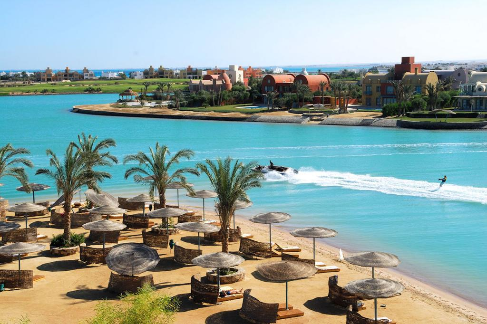
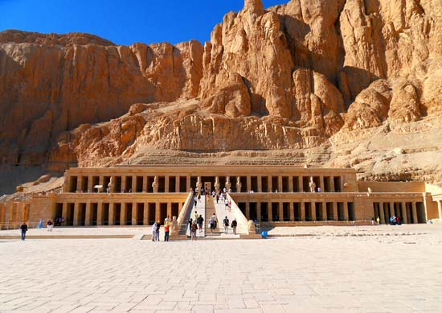
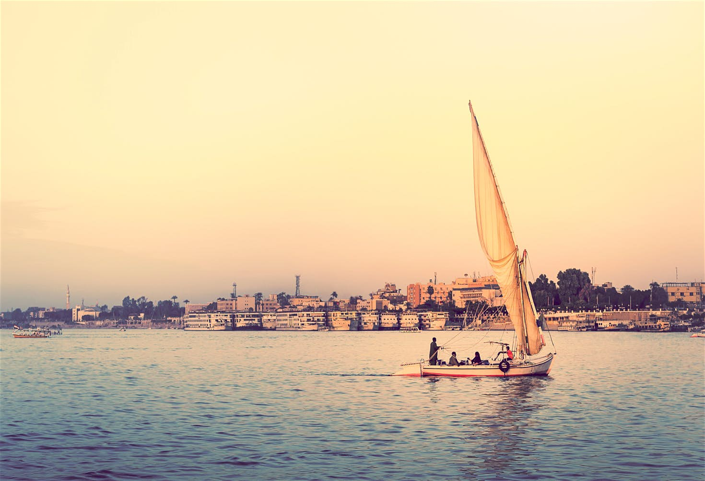
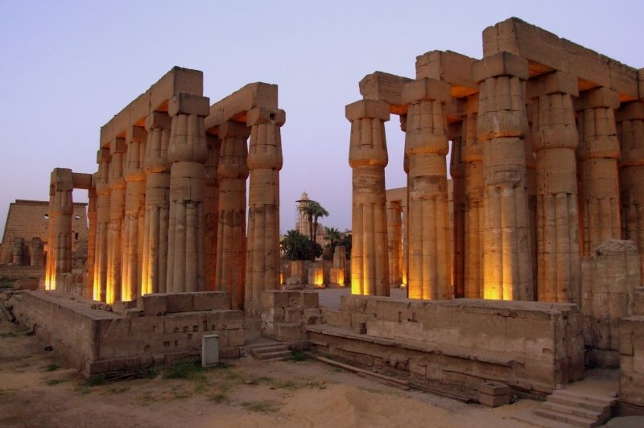
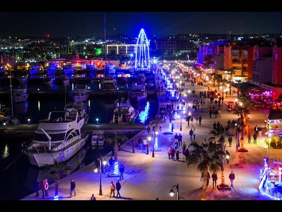
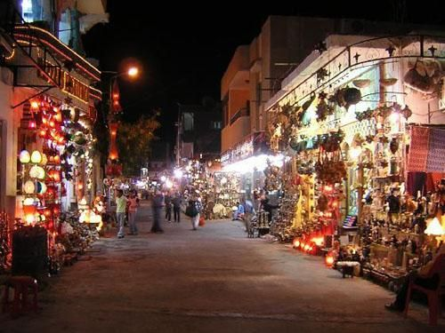

Welcome to Egypt!
A two in one experience with Luxor and Hurghada.
 
Why you should visit?
Are you a fan of history, a mind of curiosity to be challenged by the prehistoric structures of luxor?
Or desperate for a beautiful holiday with impeccable climate?
Egypt is your paradise!
The best of Luxor
The valley of the kings and Queen Hatsheputs temple  A mysterious place of wonder with 62 empty, unidentified tombs and king Tutankhamun's safehouse of a coffin.
Karnak temples Find out more about the temple of the Egyptian God - Amunrah- built by....well we don't know.
River Nile Boat Trip  Take a ride down the longest river of africa, a river surviving centuries of ancient Egypt
luxor temples  Visit the ancient and royal monument dedicated to Egyptian God Amon and constructed by many pharoahs of Eqypt.
Explore the City of Hurghada
Egypt isnt all about it's history... Hurghada's heavenly red sea and undersea world is tempting enough for anyone, along with it's luxurious beaches.
- Hurghada Marina  The ultimate jewel of Hurghada
- Swim with the dolphins!
- Or even just a stroll through the city centre... 